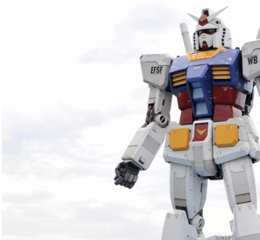

Arpitha Vinod arpithav@teenhacksli.com
Amanda Wang amanda@teenhacksli.com
Imagine being greeted with a 60-foot robot stomping around your street, crushing everything in its path. While that will probably remain a Godzilla-esque pipe dream, the world’s largest robot is currently being tested in Japan , and can currently walk, turn its head, kneel, and make hand gestures .
Japan’s Gundam robot , stationed at Yokohama Port, is based on a Japanese fictional robot named Gundam . Ever since 1979, Gundam has been featured in many anime TV shows anime TV shows, manga comics, movies, and video games. Back then, who would have thought their favorite military sci-fi robot would one day manifest itself into real life? While there has been a standing statue of Gundam since 2017, the engineers behind this construction began designing about six years ago.
Weighing 25 tons and standing 65 feet tall, the Gundam robot is an engineering marvel. Japan has created other gigantic robots, but Gundam is the first to move. In order for such a massive robot to function, all 24 of the moveable parts must work well together and all the pieces have to meet weight restrictions . Jun Narita, head of design commented, “the weight restriction is like a curse.” For example, the hand, which is roughly 6.5 feet wide, had to be 440 lbs, or otherwise there would be extra strain on the elbows, causing the arm to break off. To meet the restrictions, Narita had to reduce the amount of motors present in the hand and switched the material from steel to aluminum. Now, the robot can successfully make a peace sign with his fingers!
While fans may be expecting the Gundam robot to be a carbon copy of what they have been seeing on TV, the director of this project has a slightly different take on it. Yoshiyuki Tomino, known as the “Father of Gundam”, wanted the Gundam robot to be creative for its new and revamped 2020 audience. The creator of Gundam said, “I feel like there’s room for some modern interpretations or additions in the current design.”
So when can you visit the Gundam robot to bow before it and pay your respects? If COVID-19 wasn’t a thing, you could have already, as it was originally scheduled to be ready for unveiling by October 1st . Now, that date is pushed back but you could still see the robot move through astonishing online video demonstrations online video demonstrations. Be wary, however, that most videos sped up the robot’s movements to at least 4x its original speed . Yet there’s no denying that the Gundam robot is truly an amazing engineering feat. And if Gundam was able to be brought to life, what other popular characters could turn into real-world robots too?